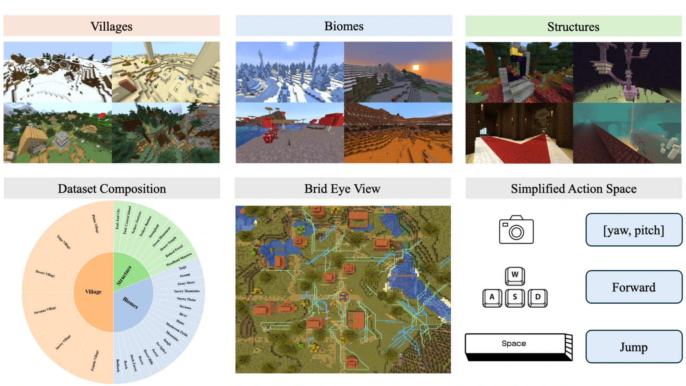

A DATASET & BENCHMARK FOR WORLD MODELS
LoopNav: Benchmarking Spatial
Consistency in World Models
1National University of Singapore2Peking University
NeurIPS 2026 — Evaluations & Datasets Track
TL;DR: Can a world model remember a place when it returns?
LoopNav tests long-horizon spatial consistency through loop-based navigation in Minecraft.
Abstract
The ability to simulate the world in a spatially consistent manner is a crucial requirement for effective world models. Beyond high-quality visual generation, a world model must retain long-horizon observations and maintain spatial representations that support reliable simulation and planning. Existing datasets rarely enforce spatial consistency, while most benchmarks emphasize visual coherence or generation quality.
We introduce LoopNav, a dataset and benchmark centered on loop-based navigation. The dataset comprises 250 hours of navigation videos with actions, collected from diverse locations in Minecraft. Its loop trajectories revisit previously observed places, creating an explicit test of spatial memory. We further introduce the Scene Graph Consistency Score (SGCS), which measures object-level spatial consistency while tolerating small pixel-level variations. The dataset, collection framework, and evaluation code support research on world models that remember the worlds they generate.
A Dataset Built Around Returning
Plausible new scenes are not enough. A revisited location should preserve the structures seen before.
LoopNav makes revisitation a core part of every trajectory. Collected in Minecraft, its observations and actions connect visually distinctive landmarks over both short and long horizons. Three principles guide the data collection:
Distinctive places
Houses, farms, and paths provide recognizable landmarks, making changes in scene structure meaningful.
Closed loops
TURN, ABA, and ABCA trajectories revisit earlier views or locations, explicitly testing spatial memory.
Progressive difficulty
Navigation ranges of 5, 15, 30, and 50 blocks extend the distance and time between observations.
Environment and data collection
Data collection uses a customized Mineflayer pipeline with A* navigation. For ABA trajectories, the agent first makes a 360° observation sweep, navigates from A to B, and returns along the forward waypoints in reverse. Twenty trajectories are collected for each combination of location and exploration radius.
The dataset includes villages, biomes, and structures. The paper’s baseline experiments focus on village environments. The environments use static structures and exclude moving mobs.

REAL DATA / INTERACTIVE
Explore the Loops
Follow three real navigation trajectories. Watch the landmarks disappear and come back into view.
Leave, then retrace.
Travel from A to B, then return along the forward waypoints in reverse. The return tests whether the model can reconstruct previously observed places.
Path schematic · not measured coordinates
- Navigation range
- 5 blocks
- Source frames
- 46–181
ABA · A → B → A · 5-block range. Displayed interval: frames 46–181; return starts at frame 113.
Recorded ground-truth observations from the dataset, not model-generated videos. TURN and ABA play at original speed; ABCA plays at 3× speed. The video controls allow pausing and seeking.
Explore First. Evaluate the Return.
Separate seeing a place from reconstructing it.
Observe the environment
and build spatial context.
Generate the return journey.
Evaluate this segment only.
For an ABA trajectory, the outward journey A → B supplies exploration context; B → A tests reconstruction. For ABCA, evaluation covers the final C → A segment. This protocol asks whether a model can reconstruct known spatial structure when it revisits a location.
Pixel-based comparisons alone can confuse small viewpoint drift with a different world. A useful consistency measure should tolerate minor misalignment while detecting missing objects, replacements, and changes in layout.
Scene Graph Consistency Score
Compare what is there and where it is—not just the pixels.
Segment
Extract category-wise object masks from aligned frame pairs using SAM 3.
Match
Match instances within each category using normalized centroid distance and bipartite matching.
Aggregate
Compute category consistency, weight by visible area, then average over sampled video frames.
How SGCS is computed
For a category with m ground-truth instances, n generated instances, and p matched pairs, consistency is the instance-level Dice score:
The category weight wc is its average mask area across the two frames. Video-level SGCS averages frame scores. The implementation samples every 5 frames by default and uses a matching threshold of 0.1 times the image diagonal.
Semantic categories include building, tree, flower, grass, path, water, sky, sand, and dirt. The current metric uses object presence and centroid alignment; explicitly comparing relational edges is discussed as future work.
Tolerate small shifts. Detect structural changes.
Controlled perturbations test two properties: robustness to color changes and small geometric shifts, and sensitivity to object deletion or position swapping. The paper compares SGCS with SSIM and sim-LPIPS (1 − LPIPS).
How Consistent Are Today’s World Models?
Five baselines. Three loop types. A challenging test of spatial memory.
Table 1. SGCS (mean ± standard deviation). Each row reports 60 trajectories; the best mean in each row is highlighted.
Swipe to see all models →
| Range (blocks) | Oasis | NWM | MineWorld | DIAMOND | WorldMem |
|---|
WorldMem has the highest SGCS at 5 blocks; NWM leads at 15, 30, and 50 blocks. Maintaining consistency over longer loops remains challenging.
What does forgetting look like?
As the rollout progresses, generated scenes can lose familiar buildings, alter the layout, or degrade visually. The qualitative example below compares ground truth with four world model baselines.
Limitations and interpretation
Simple backgrounds such as grass and sky can produce relatively high consistency scores even when spatial memory fails. SGCS should be interpreted alongside qualitative observations and scene complexity. The benchmark focuses on static Minecraft structures; dynamic scenes and richer object relationships remain directions for future work.
Values above are transcribed from Table 1 of the supplied manuscript. Figure 5 compares the four baselines shown in that figure; WorldMem is included in Table 1.
BibTeX
If you find LoopNav useful for your research, please cite the work.
@misc{lian2026loopnavbenchmarkingspatialconsistency,
title={LoopNav: Benchmarking Spatial Consistency in World Models},
author={Kewei Lian and Shaofei Cai and Yitao Liang and Anji Liu},
year={2026},
eprint={2505.22976},
archivePrefix={arXiv},
primaryClass={cs.CV},
url={https://arxiv.org/abs/2505.22976},
}